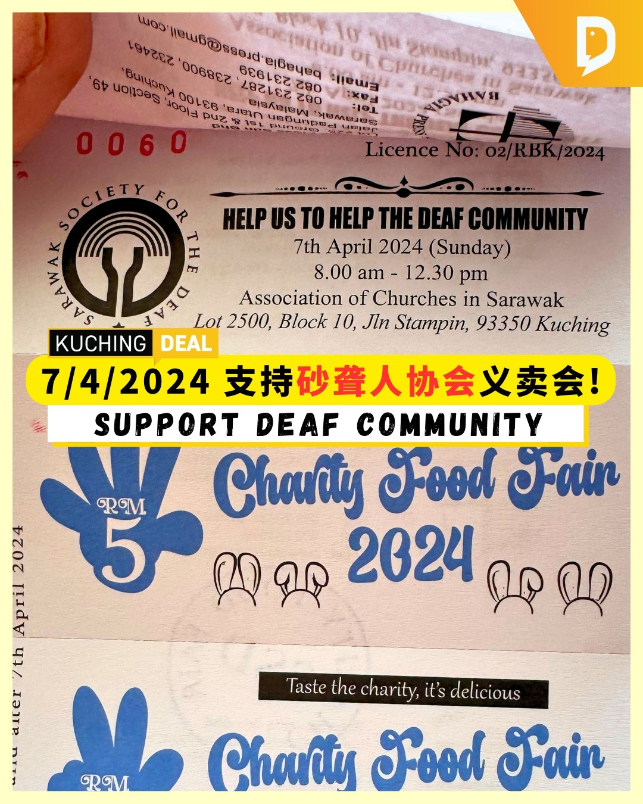
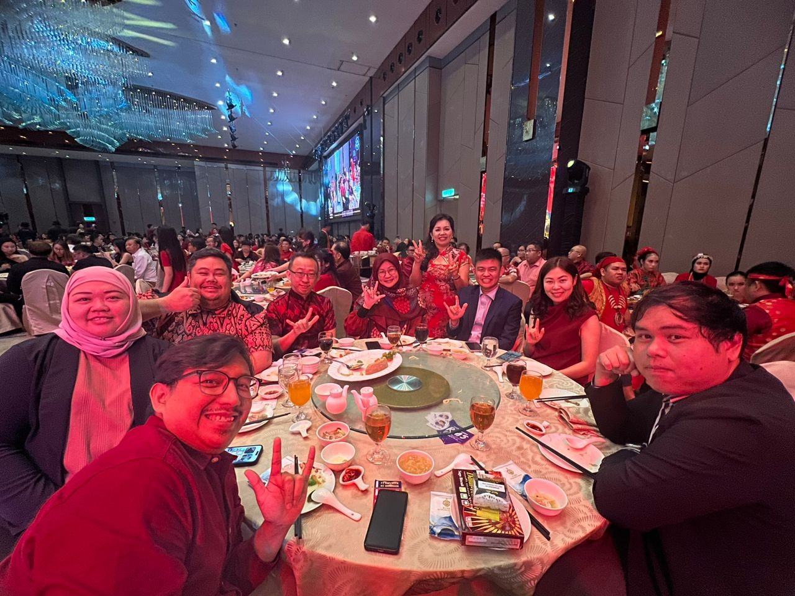
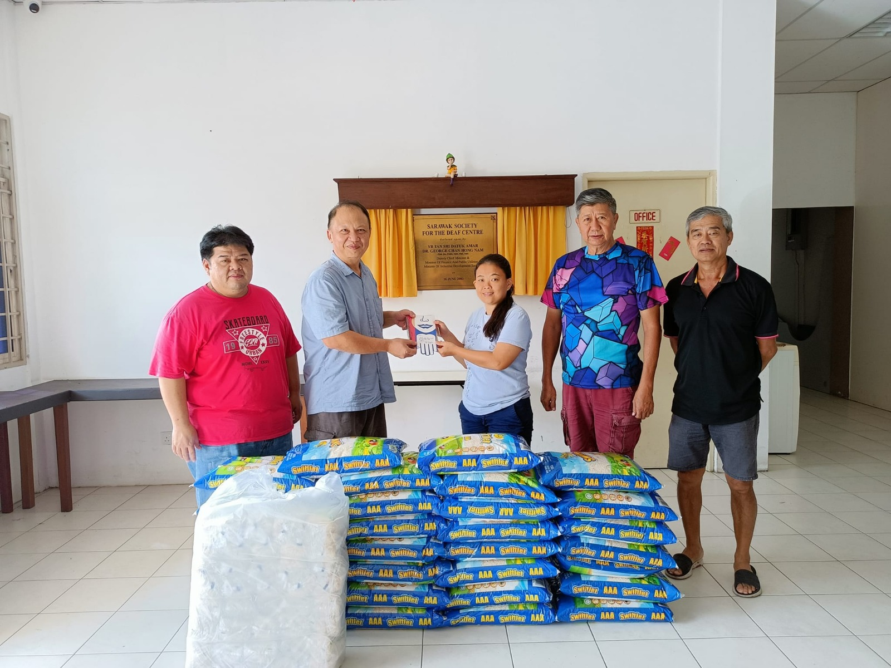

CHARITY FOOD FAIR 🍽 [07/04/2024]
"Taste the charity, it's delicious."

We welcome you to come and support on 07/04/2024!
Purchasing a book of coupon which is worth RM100, you can buy varius items in the fair, while also supporting Sarawak Society of the Deaf(SSD) in gathering the goal of RM300,000. The money will be used for:-
- BIM Classes
- Brews & Bites Café
- Early Intervention Community Programme
- Deaf Video Broadcasting Project
- Facility Upgrade
In addition to purchasing coupons for the bazaar above, you can also:-
- Set up a booth: Showcase your business or services at a bazaar.
- Donate items: Provide items for the deaf to sell at the bazaar.
- Cash Donation: Directly assist SSD's goals financially.
If you are interested in supporting, please contact the person in charge:-
- WhatsApp - Mr. Ernest Ting (deaf) https://www.wasap.my/60168716216
- Phone/Text - Mdm. Helena Lim 013-809 4599
[SSD Charity Food Fair 2024]
Date: 07/04/2024
Time: 8:00a.m. to 12:00p.m.
Location: Association of Churches, Jalan Stampin, Kuching, Sarawak
Email: ssdkuching1982@gmail.com
PINES SQUARE FAIR [26/01/2024 - 07/02/2024]
Hi everyone! SSD is thrilled to be invited by MTPN to host our Deaf businesses at their Fair. Come check us out at Pines Square (opposite MJC Batu Kawa) – we are open from 7pm every night from 26 January until 7 February (15 days)!
UNITY CHARITY AND CULTURE [13/01/2024]

Sarawak Society for the Deaf (SSD) is happy and honoured to be invited by MTPN & YMLM Sarawak to attend their UNITY CHARITY AND CULTURE at the Riverine Ballroom by Lok Thian on 13 January 2024.
In conjuction of this event The National Consumer Action Council - Sarawak (MTPN) and the Malaysian Sustainable Society Foundation (YMLM) generously donate RM3000 to Sarawak Society for Deaf (SSD).
Sir Wynson Ong Teck Ping, Chairman of the Sarawak National Consumer Action Council in his speech mentioned that giving this sincere donation is a sign that the MTPN takes seriously this close relationship with the Deaf community in Sarawak.
SSD is looking forward to future collaboration with MTPN and empower our Deaf Community to be better.
THANK YOU FOR THE DONATION [13/01/2024]

Representatives from Kuching Buddhist Meditation handed over 30 bags of rice and one big packet of Bee Hoon to Sarawak Society for the Deaf. SSD staff Amy Lau thanked and presented a token of appreciation to them.